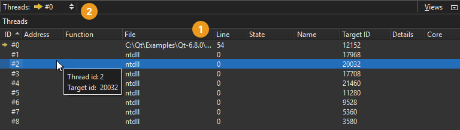

Viewing Threads
An application can have more than one thread of execution that share one address space, which means that they can examine and change the same variables. However, each thread has its own registers, execution stack, and possibly private memory.
When a multi-threaded application is interrupted, you can view the threads currently active in the application and switch between them in the Threads view (1):

You can also select a thread in the Threads field (2) on the debugger toolbar.
This allows you to select the thread that is in the focus of the debugger.
The Stack view adjusts its contents accordingly.